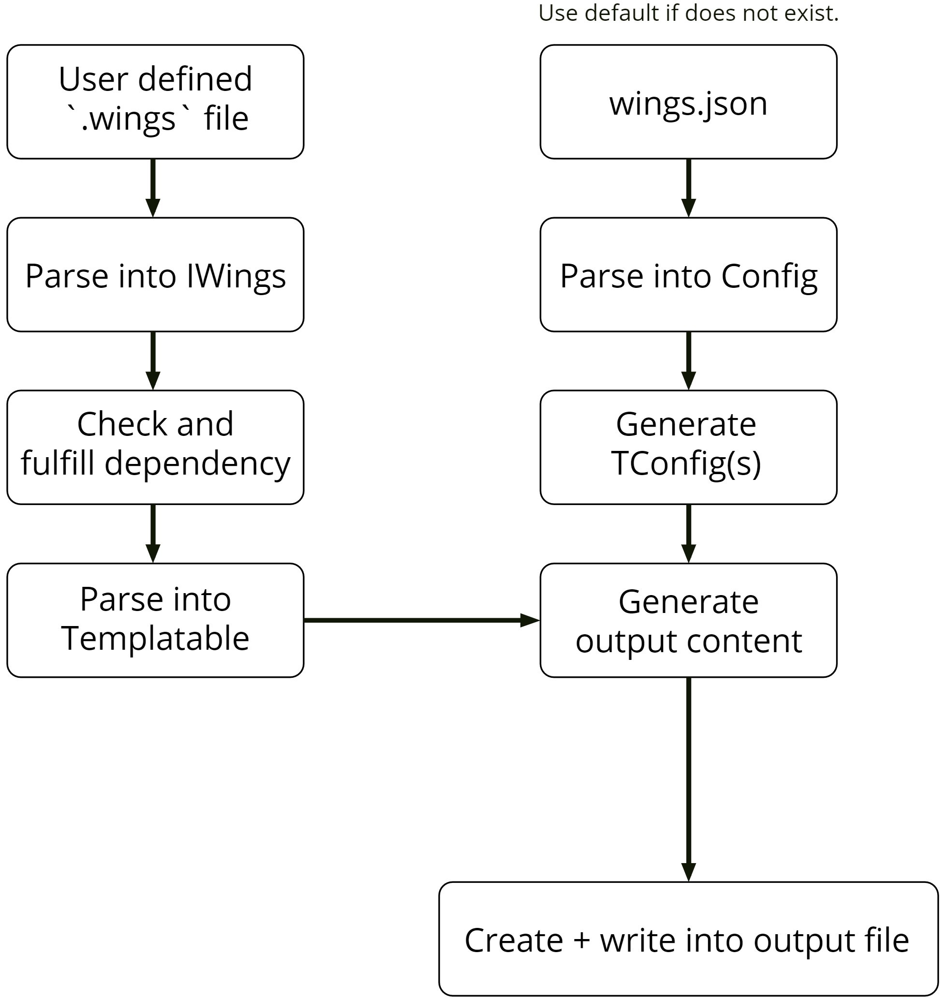

Design
Goal
Allow customizable cross language object (struct) and enum code generation to maintain variable name and type consistency across stack. In the case of wings, you only have to create / maintain the .wings file and wings will generate its corresponding output files. See home for example.
Flow
Here's a diagram for a high level illustration on how the files are generated. (More explanation on each steps are available below after the diagram.)

Note: Intentionally using API doc for linking most of the "Source" since code location might change and API doc will usually automatically update based on that.
User defined .wings file
Reading the user input files.
Parse into IWings
Parse the wings file into an IWings object type. More details on wings syntax here.
Check and fulfill dependency
After parsing all the wings file and understanding each of their dependencies (wings file does not allow circular dependency), it would start parsing (fulfilling) it from the one that doesn't have dependency and work its way up. If skipImport is set to true in the config file, it would skip generating output files of the dependencies that isn't included in the CLI argument and goes straight to generating its output filenames (required for next step).
Parse into Templatable
Once the dependency of the wings file is fulfilled, it can now be parsed to Templatable object type. (Dependency needs to be fulfilled first before this step because this step needs the file name / location of the files it depends on which can only be obtained from generating its wings file.)
wings.json
Reading the user config file.
Parse into Config
Parse user config file into Config object type. More details on how config files work here.
Generate TConfig(s)
Based on Config, parse each language specific output config file into TConfig. TConfig is essentially the language template file to tell wings how the output language is formatted. More details on how template files work here.
Generate output content
Generate output content by parsing information from Templatable based on the format / design specified in TConfig.
Create + write into output file
Create the destination file and folder (if they do not already exist) and write output content into it (overwrite original file content if it exist). If there is a write protected existing file, this step would fail.